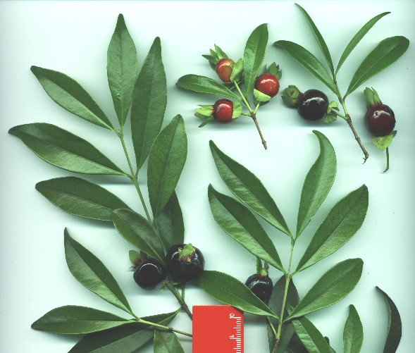

jabuticabeira-preta,
jabuticabeira-rajada, jabuticabeira-rósea, etc.
Distribuição:
Ocorre
naturalmente de MG ao RS, mais para o ocidente. Prefere baixadas úmidas
e margens de rios, com bastante iluminação direta, sendo
rara em mata fechada e sombria.
Características:
perenifólia,
mesófila ou heliófila e seletiva higrófila,
de
10 – 15 m de h, com 30 – 40 cm de DAP,
folhas
simples, de 6-7 cm de comprimento por 2-3 cm de largura.
Existem
outras espécies de jabuticabeiras, inclusive com variação
regional,
mas
todas possuem características semelhantes.
Quando
cresce em ambiente aberto (fora do mato), apresentam densa copa arredondada,
cujo
verdor é quebrado apenas nas épocas de formação
de novas ramagens, quando estas comumente apresentam coloração
avermelhada.
A
folhagem é sustentada por abundante galharia ascendente,
que
junto com o tronco formam um claro conjunto contrastante.
Seus
frutos maduros são esféricos, com diâmetro entre 2-3
cm,
de
coloração brilhante roxo-escura à preta.
Nascem
no tronco e galhos, após típica floração branca
que enfeita seu caule.
São
doces, e lembram grandes uvas, porém de casca mais resistente.
Muito
apreciados pelos animais e pelo homem.
Este
último, serve-se dos frutos in natura, ou produzindo geleias, doces,
licores, etc.
Bem
por isto, em certas regiões do Brasil,
é
tradicionalmente cultivada próximo às moradias rurais.
Produção
de mudas:
frutifica
geralmente duas vezes ao ano, entre agosto a outubro,
e
entre janeiro a março (varia conforme a região).
Colhe-se
os frutos diretamente da árvore, quando começarem a queda
espontânea,
ou
junta-se do chão. Pode-se semear o fruto ou a semente fresca
despolpada.
No
segundo caso, germina dias antes, entre 30-50 dias.
A
viabilidade germinativa é bastante curta, e segundo alguns,
para
um máximo proveito não se deve nem mesmo permitir que seque.
Parece
ser vantajoso o plantio direto em embalagens individuais.
Nos
primeiros meses, devem ser mantidas em ambiente abrigado do sol forte.
Seu
desenvolvimento é bastante lento,
necessitando
de 8 – 12 anos para iniciar a frutificação,
quando
em solo fértil e bem irrigado.

Arquivo
CEPEN - Marcelo De Negri Xavier
Nome:
Cerejeira,
Eugenia involucrata
Família:
Myrtaceae
Sinônimos
vernáculos:
cerejeira-do-mato,
cerejeira-do-rio-grande.
Distribuição:
naturalmente
rara, ocorre de MG ao RS,
principalmente
na floresta semidecídua de altitude e subosques das Araucárias.
Características:
semidecídua,
heliófila e seletiva higrófila,
de
10 – 15 m de h, com 30 – 40 cm de DAP,
folhas
simples, de 5-9 cm de comprimento por 2-3 cm de largura.
A
folhagem apresenta face superior verde-escuro e brilhosa.
O
tronco é escamante de cor cinza-amarronzado e verde.
Formam
um conjunto de grande beleza paisagística.
Como
as demais da família Myrtaceae,
é
especialmente indicada para arborização urbana,
pela
sua beleza, alimentação da fauna, lento crescimento, etc.
Seus
frutos maduros são oblongos, medindo em torno de 1,5 a 2 cm de comprimento,
de coloração brilhante negro-vináceo. Nascem nos ramos
finos, na ponta dos galhos, após floração branca que
enfeita seu caule. São doces, delicados.
Apreciadíssimos pela fauna. O Homem também dele se
utiliza in natura ou para doces, geleias, licores, etc.
Produção
de mudas:
floresce
entre setembro e novembro,
e
apresenta frutos maduros frutifica entre outubro e dezembro.
Colhe-se
os frutos quando começarem a queda espontânea, ou junta-se
do chão.
Pode-se
despolpar as sementes em uma peneira com água corrente.
Aconselha-se
o plantio direto em embalagens individuais.
Emerge,
entre 30-40 dias. A viabilidade germinativa é bastante curta.
Nos
primeiros meses, devem ser mantidas em ambiente abrigado do sol forte.
Seu
desenvolvimento é bastante lento,
necessitando,
em ambiente favorável, de 7 - 8 anos para iniciar a frutificação.
Nome:
Uvaieira,
Eugenia pyriformis
Família:
Myrtaceae
Sinônimos
vernáculos:
uvaia,
uvalheira, uvalha-do-campo,
Distribuição:
ocorre
de SP ao RS, na floresta semidecídua do Planalto e da bacia do rio
Paraná.
Prefere
subosques mais abertos e iluminados.
Características:
semidecídua,
heliófila e seletiva higrófila,
de
5 – 15 m de h, com 20 – 40 cm de DAP, folhas simples, de 4-7 cm de comprimento.
A
folhagem apresenta-se em ramagens finas, sendo róseo-avermelhada
ao brotar,
e
estabilizando no verde-claro, compondo uma copa esparsa.
O
tronco é escamante de cor clara, deixando cicatrizes ainda mais
claras.
Formam
um conjunto de grande beleza paisagística.
Como
as demais da família Myrtaceae,
é
especialmente indicada para arborização urbana,
pela
sua beleza, alimentação da fauna, etc.
Produz
frutificação abundante.
Seus
frutos maduros são arredondados
e
relativamente grandes para esta família (de 2-4 cm de diâmetro),
e
sua coloração varia entre o amarelo e o alaranjado.
Nascem
nos ramos finos, na ponta dos galhos,
após
farta floração branca que contribui para a grande beleza
desta árvore.
São
doces, e possuem uma casca muito delicada.
Apreciadíssimos
pela fauna.
O
Homem aprecia-o sobretudo para deles fazer suco.
Produção
de mudas:
floresce
entre agosto e setembro no norte da sua distribuição,
e
entre novembro e dezembro no sul.
Frutos
maduros entre setembro e fevereiro.
Colhe-se
os frutos quando começarem a queda espontânea, ou junta-se
do chão.
Pode-se
despolpar as sementes em uma peneira com água corrente.
Aconselha-se
o plantio direto em embalagens individuais.
Emerge,
entre 10-40 dias.
A
viabilidade germinativa é bastante curta (menos de 60 dias).
Nos
primeiros meses, devem ser mantidas em ambiente abrigado do sol forte.